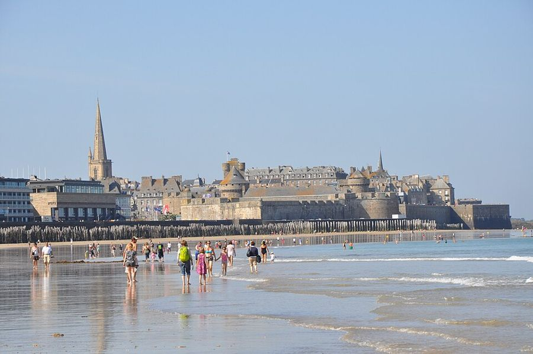
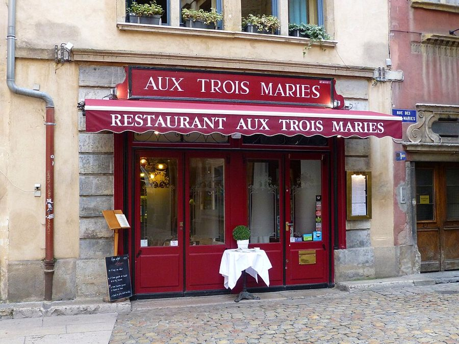
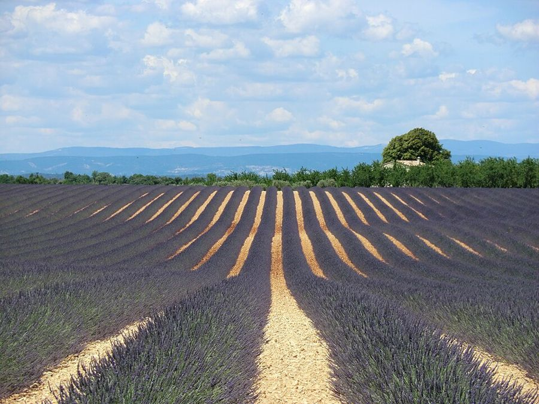

Bonjour Emilly !
Aujourd'hui, tu révises les trois moments pour parler de voyages : le passé, le présent et le futur. Tu travailles seule, pendant environ une heure. Today you are revising the three time frames for talking about travel: past, present and future. You are working on your own, for about an hour.
- Lis d'abord le petit rappel de grammaire. First read the short grammar reminder.
- Appuie sur 🔊 pour écouter les phrases. Tap 🔊 to listen to the sentences.
- Chaque réponse est corrigée tout de suite, avec une explication. Each answer is corrected straight away, with an explanation.
- Tes erreurs arrivent dans le cadre « À revoir », à la fin de la page. Your mistakes appear in the "À revoir" (to review) box at the end of the page.
Le rappel de grammaireGrammar reminder
1. Quel moment ? Which time frame?
Quand on parle de voyages, on raconte ce qu'on a fait, on dit ce qu'on aime faire et on présente ce qu'on va faire. Avant de conjuguer, cherche le mot qui indique le moment : il te dit quel temps utiliser. When we talk about travel, we say what we did, what we like doing and what we are going to do. Before you conjugate, look for the word that tells you when: it tells you which tense to use.
Passé · Past
- hier yesterday
- le weekend dernier last weekend
- la semaine dernière last week
- l'année dernière last year
- quand j'étais petite when I was little
Présent · Present
- aujourd'hui today
- tous les weekends every weekend
- souvent often
- en ce moment at the moment
Futur · Future
- demain tomorrow
- le weekend prochain next weekend
- la semaine prochaine next week
- l'année prochaine next year
- dans dix ans in ten years' time
2. Le présent The present tense
On l'utilise pour parler de ses goûts, de ses habitudes et de ce qui se passe maintenant. We use it to talk about what we like, our habits and what is happening now.
| visiter (-ER) | |
|---|---|
| je visite | nous visitons |
| tu visites | vous visitez |
| il, elle visite | ils visitent |
| aller | |
|---|---|
| je vais | nous allons |
| tu vas | vous allez |
| il va | ils vont |
| faire | |
|---|---|
| je fais | nous faisons |
| tu fais | vous faites |
| il fait | ils font |
3. Le passé composé The perfect tense
Pour une action terminée, à un moment précis du passé : ce qu'on a fait hier, le weekend dernier, pendant les vacances. For a completed action at a specific moment in the past: what we did yesterday, last weekend, during the holidays.
avoir ou être au présent + participe passé
avoir or être in the present + past participle
| Infinitif | Participe | Exemples |
|---|---|---|
| -ER | -é | visiter → visité · manger → mangé |
| -IR | -i | choisir → choisi · partir → parti |
| -RE | -u | attendre → attendu · vendre → vendu |
| irréguliers | faire → fait · prendre → pris · voir → vu · être → été · avoir → eu · boire → bu |
nous avons visité · vous avez visité · ils ont visité With avoir: most verbs. No agreement with the subject.
je suis allé(e) · elle est allée · nous sommes allé(e)s With être: verbs of movement and reflexive verbs.
il est allé · elle est allée · ils sont allés · elles sont allées With être, the past participle agrees with the subject: add -e for a feminine subject and -s for a plural one.

4. L'imparfait The imperfect tense
1. Une habitude passée
Quand j'étais petite, nous allions à la mer chaque été.A past habit: we used to go…2. Une description
Il faisait beau et la plage était calme.A description: the weather was lovely…3. Une action en cours
Je marchais sur la plage quand j'ai vu un phoque.An action in progress: I was walking…On prend le verbe au présent avec nous, on enlève -ons et on ajoute les terminaisons. Un seul verbe est irrégulier : être → ét-. Take the "nous" form of the present, remove "-ons" and add the endings. Only "être" is irregular: its stem is "ét-".
| aller | |
|---|---|
| j'allais | nous allions |
| tu allais | vous alliez |
| il, elle allait | ils, elles allaient |
| être | |
|---|---|
| j'étais | nous étions |
| tu étais | vous étiez |
| il, elle était | ils, elles étaient |
5. Le futur : deux façons d'en parler The future: two ways
Un projet décidé, proche, très courant à l'oral.A plan that is decided or close; very common in speech.
Un projet plus lointain, une prévision.A plan further ahead, a prediction.
| visiter au futur simple | |
|---|---|
| je visiterai | nous visiterons |
| tu visiteras | vous visiterez |
| il, elle visitera | ils, elles visiteront |
-RE verbs drop the final e: prendre → je prendrai.
6. Un même verbe, trois moments One verb, three time frames
| Verbe | Passé composé | Imparfait | Présent | Futur proche | Futur simple |
|---|---|---|---|---|---|
| visiter | j'ai visité | je visitais | je visite | je vais visiter | je visiterai |
| aller | je suis allé(e) | j'allais | je vais | je vais aller | j'irai |
| faire | j'ai fait | je faisais | je fais | je vais faire | je ferai |
| partir | je suis parti(e) | je partais | je pars | je vais partir | je partirai |
Les exercicesThe exercises
À toi d'écrire : ma ville en trois temps
Emilly, parle d'une ville que tu aimes : ce que tu as fait là-bas, ce que tu aimes aujourd'hui et ce que tu feras la prochaine fois. Écris 3 petits paragraphes de 2 ou 3 phrases. Emilly, write about a town you like: what you did there, what you like today and what you will do next time. Write 3 short paragraphs of 2 or 3 sentences.


1. Le passé · Une fois, je suis allée à… The past
2. Le présent · Aujourd'hui… The present
3. Le futur · La prochaine fois… The future
Copie ton texte et envoie-le à Irène pour la correction. · Copy your text and send it to Irène for correction.